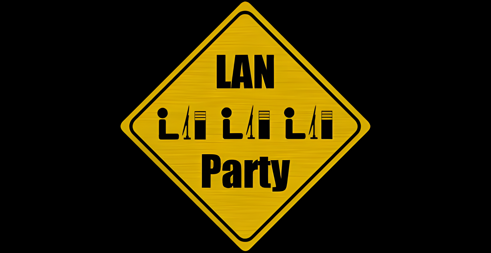

LanParty

Em meados de dezembro de 2019, foi realizada a primeira LAN party, quando o grupo ainda era o Salame. O evento aconteceu na casa do membro Luiz, e os participantes foram Luiz, Giovanni e Leo. As fotos desse evento viraram lost media.